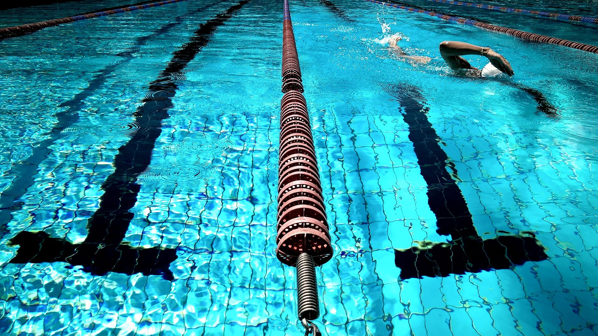

A Scholarship Story That Should Inspire Every Young Swimmer
When news broke recently about a young swimmer earning a college swimming scholarship, it served as a powerful reminder that aquatic sports can open doors that extend far beyond the pool. For families in Wesley Chapel, Land O' Lakes, and across the greater Tampa Bay area, stories like this are not distant achievements — they are attainable goals that begin with the right preparation, the right mindset, and the right support system.
Whether your child is a competitive swimmer or a water polo player just starting to discover their passion for the water, it is never too early to understand what the college recruiting process looks like and how to build toward it intentionally.
What College Coaches Are Looking For
Earning a swimming scholarship is about far more than raw speed. College coaches at all levels — NCAA Division I, Division II, Division III, and NAIA — evaluate young athletes on a combination of athletic performance, academic achievement, coachability, and character. Understanding this early gives families a significant advantage.
Here are the core qualities that recruiting coaches consistently prioritize:
- Consistent performance in competition: Coaches want to see times that hold up under pressure, not just great practices.
- Academic standing: Most scholarship programs require athletes to maintain strong GPA and standardized test scores throughout high school.
- Leadership and attitude: Swimmers and players who demonstrate resilience, teamwork, and a positive attitude stand out on and off the roster.
- Early communication: Coaches appreciate when student-athletes reach out proactively, express genuine interest, and follow up professionally.
The Timeline Matters More Than Most Families Realize
One of the most common misconceptions parents have is that recruiting happens in a young athlete's junior or senior year of high school. In reality, the foundation for a scholarship is laid much earlier. Swimmers who compete seriously at the club level throughout middle school and into high school are building the race history and technical proficiency that coaches will eventually review.
For families in the Tampa Bay area, this means taking youth aquatic training seriously now — not as added pressure, but as purposeful investment. Every meet, every practice, and every technical correction is a brick in a much larger structure.
How Nexar Aquatic Academy Supports the Path to College Athletics
At Nexar Aquatic Academy, we work with young athletes in Wesley Chapel and Land O' Lakes who have big goals. Our coaches understand that training for college-level competition requires a structured, progressive approach that builds both physical capability and competitive confidence over time. We do not just coach strokes — we help young swimmers and water polo players develop the habits, work ethic, and self-awareness that recruiting coaches are looking for when they evaluate an athlete's full profile.
Parents play a critical role in this journey as well. Staying engaged with your child's progress, keeping academics strong, and helping them communicate professionally with coaches are all pieces of a successful recruiting process.
Start the Conversation Early
If your child dreams of competing at the college level and earning scholarship support for their education, the most important thing you can do right now is take the next step — whether that means enrolling in a structured training program, attending a college recruiting information session, or simply having an honest conversation with your child about their goals.
Scholarships are real. They are earned by young athletes who started preparing before most of their peers even thought about it. The Tampa Bay aquatic community is full of talent, and with consistent effort and the right guidance, your swimmer could be the next success story worth celebrating.
Ready to get in the water?
First practice is completely FREE — no commitment needed.